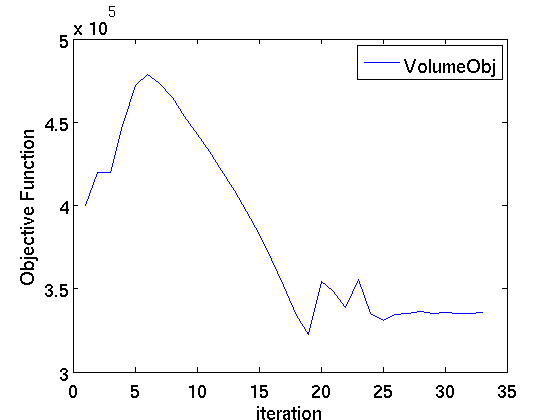
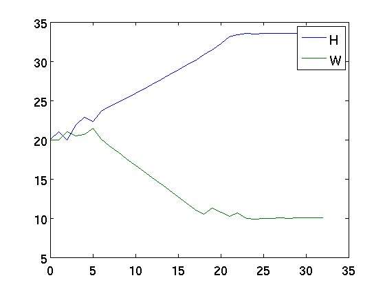
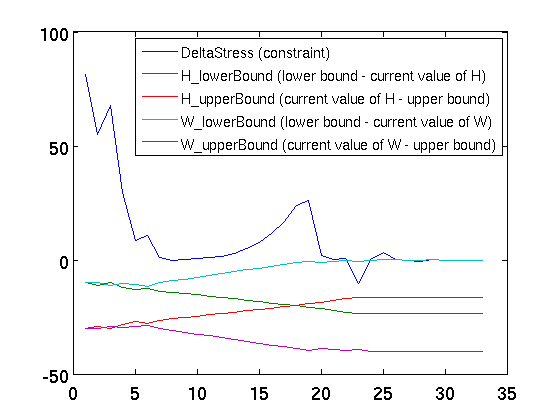

TutorialCantileverBeamAnsys
Model Definition and Uncertainty Quantification This script run the Cantilever Beam Tutorial for Ansys in the COSSAN-X Engine
See Also http://mechanik.uibk.ac.at/wiki/index.php/Cantilever_Beam
Contents
Input files manipulation
% Retrieve the directory where this tutorial is stored StutorialPath = fileparts(which('TutorialCantileverBeamAnsys.m')); % copy the FE-input files with COSSAN-identifiers to the working directory copyfile(fullfile(StutorialPath,'cantileverBeamAnsys','BeamAnsys.txt.cossan'),... fullfile(CossanX.getCossanWorkingPath),'f'); disp('The input file for the FE solver has been copied to the following folder:') disp(CossanX.getCossanWorkingPath) % Reset the random number generator in order to obtain always the same results. % DO NOT CHANGE THE VALUES OF THE SEED CossanX.resetRandomNumberGenerator(51125)
The input file for the FE solver has been copied to the following folder: /home/ep/workspace/COSSAN-X_SVN/COSSANXengine/examples/Tutorials/CantileverBeam/
Perform optimization in Matlab
H=DesignVariable('Sdescription','Beam Height','lowerBound',10,'upperBound',50,'value',20); W=DesignVariable('Sdescription','Beam Width','lowerBound',10,'upperBound',50,'value',20); XmaxStress=Parameter('Sdescription','Maximum stress','value',200); Xinput=Input('CXmembers',{H W XminStress XmaxStress},... 'CSmembers',{'H' 'W' 'XminStress' 'XmaxStress'});
Create connector
Xi=Injector('Stype','scan','Sscanfilepath',CossanX.getCossanWorkingPath,'Sscanfilename','BeamAnsys.txt.cossan', ... 'Srelativepath','./','Sfile','BeamAnsys.txt'); XrespVolume = Response( 'Sname', 'Volume', ... 'Sfieldformat', '%e', ... 'Ncolnum',1, ... 'Nrownum',1); XrespStress = Response( 'Sname', 'MaximumStress', ... 'Sfieldformat', '%e', ... 'Ncolnum',2, ... 'Nrownum',1); Xe=Extractor('Sdescription','Extract Volume and maximum stress', ... 'Srelativepath','./', ... % this is the directory where the input and output are contained 'Sfile','OutputMatlab.txt', ... 'CXresponse',{XrespVolume XrespStress}); Xc=Connector('SpredefinedType','ansys','Sworkingdirectory','/tmp',... 'Smaininputfile','BeamAnsys.txt',... 'Smaininputpath',CossanX.getCossanWorkingPath, ... 'Soutputfile','AnsysOutput.out','CXmembers',{Xe Xi}, ... 'LkeepSimulationFiles',false); Xeval=Evaluator('CXmembers',{Xc},'CSmembers',{'Xc'}); Xmodel=Model('Xevaluator',Xeval,'Xinput',Xinput);
[COSSAN-X.Injector.createByScan] File to be scanned: /home/ep/workspace/COSSAN-X_SVN/COSSANXengine/examples/Tutorials/CantileverBeam/BeamAnsys.txt.cossan [COSSAN-X.Injector.createByScan] Close File to be scanned: /home/ep/workspace/COSSAN-X_SVN/COSSANXengine/examples/Tutorials/CantileverBeam/BeamAnsys.txt.cossan EOF found after 54 lines
Check FE solver
A deterministic simulation is performed in order to check the connector and the FE solver
Xout=Xmodel.deterministicAnalysis; % Show the value of the Volume fprintf('Beam Volume; %e \n',Xout.getValues('Sname','Volume')) % Show the value of the Volume fprintf('Maximum stress: %e',Xout.getValues('Sname','MaximumStress'))
[COSSAN-X.Connector.run] No database driver used (Flag LkeepSimulationFiles set true Simulation #1 of 1 [COSSAN-X:Connector:copyFiles] main Input file already copied [COSSAN-X:Connector:copyFiles] MainInputFile: /home/ep/workspace/COSSAN-X_SVN/COSSANXengine/examples/Tutorials/CantileverBeam/BeamAnsys.txt [COSSAN-X:Connector:copyFiles] Injector File: /home/ep/workspace/COSSAN-X_SVN/COSSANXengine/examples/Tutorials/CantileverBeam/BeamAnsys.txt [COSSAN-X.Connector.inject] 1 injector(s) present into the connector [COSSAN-X.Injector.inject] Replacing value in the file: /tmp/20110524T115139_sim_1/./BeamAnsys.txt [COSSAN-X.Connector.run] Prepare execution command: 'cd /tmp/20110524T115139_sim_1; pwd;/usr/site/ansys/12.0SP1/i386/v120/ansys/bin/ansys120 -p aa_t_i -i BeamAnsys.txt [COSSAN-X.Connector.run] Creating SimulationData object [COSSAN-X.Connector.run] - END -24-May-2011 11:51:42 Beam Volume; 4.000000e+05 Maximum stress: 2.812500e+02
Design of Experiments
The design of experiments allows to see the variability of the quantities of interest respect to the values of the design variables. In this example the FullFactorial method for design of experiments with 3 levels for each design variable is used.
Xdoe=DesignOfExperiments('Sdesigntype','FullFactorial',... 'Vlevelvalues',[3 3],'Clevelnames',{'H' 'W'}); % Show summary of the design of experimemts display(Xdoe) % and now, evaluate the model at the points defined by the DesignOfExperiment XoutDoe=Xdoe.apply(Xmodel); % Show results fprintf(' Results of the Design of Experiments\n') fprintf('--------------------------------------------------------\n'); fprintf(' H | W | Volume | Maximum Streess\n'); fprintf('--------------------------------------------------------\n'); for n=1:length(XoutDoe.Tvalues) fprintf(' %8.2e | %8.2e | %8.2e | %8.2e\n',XoutDoe.Tvalues(n).H,... XoutDoe.Tvalues(n).W,XoutDoe.Tvalues(n).Volume,XoutDoe.Tvalues(n).MaximumStress) end
Warning: The class file for 'DesignOfExperiments' has been changed; but the change cannot be
applied because objects based on the old class file still exist. If you use those objects, you
might get unexpected results. You can use the 'clear' command to remove those objects. See 'help
clear' for information on how to remove those objects.
===================================================================
DesignOfExperiment Object - Description:
===================================================================
* Type of design of experiment : FullFactorial
* Central composite design : faced
* Perturbation parameter : 1
* Current values of the DesignVariable used
[COSSAN-X.Connector.run] No database driver used (Flag LkeepSimulationFiles set true
Simulation #1 of 9
[COSSAN-X:Connector:copyFiles] main Input file already copied
[COSSAN-X:Connector:copyFiles] MainInputFile: /home/ep/workspace/COSSAN-X_SVN/COSSANXengine/examples/Tutorials/CantileverBeam/BeamAnsys.txt
[COSSAN-X:Connector:copyFiles] Injector File: /home/ep/workspace/COSSAN-X_SVN/COSSANXengine/examples/Tutorials/CantileverBeam/BeamAnsys.txt
[COSSAN-X.Connector.inject] 1 injector(s) present into the connector
[COSSAN-X.Injector.inject] Replacing value in the file: /tmp/20110524T115142_sim_1/./BeamAnsys.txt
[COSSAN-X.Connector.run] Prepare execution command: 'cd /tmp/20110524T115142_sim_1; pwd;/usr/site/ansys/12.0SP1/i386/v120/ansys/bin/ansys120 -p aa_t_i -i BeamAnsys.txt
Simulation #2 of 9
[COSSAN-X:Connector:copyFiles] main Input file already copied
[COSSAN-X:Connector:copyFiles] MainInputFile: /home/ep/workspace/COSSAN-X_SVN/COSSANXengine/examples/Tutorials/CantileverBeam/BeamAnsys.txt
[COSSAN-X:Connector:copyFiles] Injector File: /home/ep/workspace/COSSAN-X_SVN/COSSANXengine/examples/Tutorials/CantileverBeam/BeamAnsys.txt
[COSSAN-X.Connector.inject] 1 injector(s) present into the connector
[COSSAN-X.Injector.inject] Replacing value in the file: /tmp/20110524T115142_sim_2/./BeamAnsys.txt
[COSSAN-X.Connector.run] Prepare execution command: 'cd /tmp/20110524T115142_sim_2; pwd;/usr/site/ansys/12.0SP1/i386/v120/ansys/bin/ansys120 -p aa_t_i -i BeamAnsys.txt
Simulation #3 of 9
[COSSAN-X:Connector:copyFiles] main Input file already copied
[COSSAN-X:Connector:copyFiles] MainInputFile: /home/ep/workspace/COSSAN-X_SVN/COSSANXengine/examples/Tutorials/CantileverBeam/BeamAnsys.txt
[COSSAN-X:Connector:copyFiles] Injector File: /home/ep/workspace/COSSAN-X_SVN/COSSANXengine/examples/Tutorials/CantileverBeam/BeamAnsys.txt
[COSSAN-X.Connector.inject] 1 injector(s) present into the connector
[COSSAN-X.Injector.inject] Replacing value in the file: /tmp/20110524T115142_sim_3/./BeamAnsys.txt
[COSSAN-X.Connector.run] Prepare execution command: 'cd /tmp/20110524T115142_sim_3; pwd;/usr/site/ansys/12.0SP1/i386/v120/ansys/bin/ansys120 -p aa_t_i -i BeamAnsys.txt
Simulation #4 of 9
[COSSAN-X:Connector:copyFiles] main Input file already copied
[COSSAN-X:Connector:copyFiles] MainInputFile: /home/ep/workspace/COSSAN-X_SVN/COSSANXengine/examples/Tutorials/CantileverBeam/BeamAnsys.txt
[COSSAN-X:Connector:copyFiles] Injector File: /home/ep/workspace/COSSAN-X_SVN/COSSANXengine/examples/Tutorials/CantileverBeam/BeamAnsys.txt
[COSSAN-X.Connector.inject] 1 injector(s) present into the connector
[COSSAN-X.Injector.inject] Replacing value in the file: /tmp/20110524T115142_sim_4/./BeamAnsys.txt
[COSSAN-X.Connector.run] Prepare execution command: 'cd /tmp/20110524T115142_sim_4; pwd;/usr/site/ansys/12.0SP1/i386/v120/ansys/bin/ansys120 -p aa_t_i -i BeamAnsys.txt
Simulation #5 of 9
[COSSAN-X:Connector:copyFiles] main Input file already copied
[COSSAN-X:Connector:copyFiles] MainInputFile: /home/ep/workspace/COSSAN-X_SVN/COSSANXengine/examples/Tutorials/CantileverBeam/BeamAnsys.txt
[COSSAN-X:Connector:copyFiles] Injector File: /home/ep/workspace/COSSAN-X_SVN/COSSANXengine/examples/Tutorials/CantileverBeam/BeamAnsys.txt
[COSSAN-X.Connector.inject] 1 injector(s) present into the connector
[COSSAN-X.Injector.inject] Replacing value in the file: /tmp/20110524T115142_sim_5/./BeamAnsys.txt
[COSSAN-X.Connector.run] Prepare execution command: 'cd /tmp/20110524T115142_sim_5; pwd;/usr/site/ansys/12.0SP1/i386/v120/ansys/bin/ansys120 -p aa_t_i -i BeamAnsys.txt
Simulation #6 of 9
[COSSAN-X:Connector:copyFiles] main Input file already copied
[COSSAN-X:Connector:copyFiles] MainInputFile: /home/ep/workspace/COSSAN-X_SVN/COSSANXengine/examples/Tutorials/CantileverBeam/BeamAnsys.txt
[COSSAN-X:Connector:copyFiles] Injector File: /home/ep/workspace/COSSAN-X_SVN/COSSANXengine/examples/Tutorials/CantileverBeam/BeamAnsys.txt
[COSSAN-X.Connector.inject] 1 injector(s) present into the connector
[COSSAN-X.Injector.inject] Replacing value in the file: /tmp/20110524T115142_sim_6/./BeamAnsys.txt
[COSSAN-X.Connector.run] Prepare execution command: 'cd /tmp/20110524T115142_sim_6; pwd;/usr/site/ansys/12.0SP1/i386/v120/ansys/bin/ansys120 -p aa_t_i -i BeamAnsys.txt
Simulation #7 of 9
[COSSAN-X:Connector:copyFiles] main Input file already copied
[COSSAN-X:Connector:copyFiles] MainInputFile: /home/ep/workspace/COSSAN-X_SVN/COSSANXengine/examples/Tutorials/CantileverBeam/BeamAnsys.txt
[COSSAN-X:Connector:copyFiles] Injector File: /home/ep/workspace/COSSAN-X_SVN/COSSANXengine/examples/Tutorials/CantileverBeam/BeamAnsys.txt
[COSSAN-X.Connector.inject] 1 injector(s) present into the connector
[COSSAN-X.Injector.inject] Replacing value in the file: /tmp/20110524T115142_sim_7/./BeamAnsys.txt
[COSSAN-X.Connector.run] Prepare execution command: 'cd /tmp/20110524T115142_sim_7; pwd;/usr/site/ansys/12.0SP1/i386/v120/ansys/bin/ansys120 -p aa_t_i -i BeamAnsys.txt
Simulation #8 of 9
[COSSAN-X:Connector:copyFiles] main Input file already copied
[COSSAN-X:Connector:copyFiles] MainInputFile: /home/ep/workspace/COSSAN-X_SVN/COSSANXengine/examples/Tutorials/CantileverBeam/BeamAnsys.txt
[COSSAN-X:Connector:copyFiles] Injector File: /home/ep/workspace/COSSAN-X_SVN/COSSANXengine/examples/Tutorials/CantileverBeam/BeamAnsys.txt
[COSSAN-X.Connector.inject] 1 injector(s) present into the connector
[COSSAN-X.Injector.inject] Replacing value in the file: /tmp/20110524T115142_sim_8/./BeamAnsys.txt
[COSSAN-X.Connector.run] Prepare execution command: 'cd /tmp/20110524T115142_sim_8; pwd;/usr/site/ansys/12.0SP1/i386/v120/ansys/bin/ansys120 -p aa_t_i -i BeamAnsys.txt
Simulation #9 of 9
[COSSAN-X:Connector:copyFiles] main Input file already copied
[COSSAN-X:Connector:copyFiles] MainInputFile: /home/ep/workspace/COSSAN-X_SVN/COSSANXengine/examples/Tutorials/CantileverBeam/BeamAnsys.txt
[COSSAN-X:Connector:copyFiles] Injector File: /home/ep/workspace/COSSAN-X_SVN/COSSANXengine/examples/Tutorials/CantileverBeam/BeamAnsys.txt
[COSSAN-X.Connector.inject] 1 injector(s) present into the connector
[COSSAN-X.Injector.inject] Replacing value in the file: /tmp/20110524T115142_sim_9/./BeamAnsys.txt
[COSSAN-X.Connector.run] Prepare execution command: 'cd /tmp/20110524T115142_sim_9; pwd;/usr/site/ansys/12.0SP1/i386/v120/ansys/bin/ansys120 -p aa_t_i -i BeamAnsys.txt
[COSSAN-X.Connector.run] Creating SimulationData object
[COSSAN-X.Connector.run] - END -24-May-2011 11:52:05
Results of the Design of Experiments
--------------------------------------------------------
H | W | Volume | Maximum Streess
--------------------------------------------------------
1.00e+01 | 1.00e+01 | 1.00e+05 | 2.25e+03
3.00e+01 | 1.00e+01 | 3.00e+05 | 2.50e+02
5.00e+01 | 1.00e+01 | 5.00e+05 | 9.00e+01
1.00e+01 | 3.00e+01 | 3.00e+05 | 7.50e+02
3.00e+01 | 3.00e+01 | 9.00e+05 | 8.33e+01
5.00e+01 | 3.00e+01 | 1.50e+06 | 3.00e+01
1.00e+01 | 5.00e+01 | 5.00e+05 | 4.50e+02
3.00e+01 | 5.00e+01 | 1.50e+06 | 5.00e+01
5.00e+01 | 5.00e+01 | 2.50e+06 | 1.80e+01
Perform Optimization of the Cantilever Beam
The cantilever beam is now optimized respect to the volume (i.e. minimizing the volume) and the maximum stess allowed (i.e. constraint).
% Definition of the objective function Xobjfun = ObjectiveFunction('Sdescription','objective function', ... 'Sscript','for n=1:length(Tinput),Toutput(n).VolumeObj=Tinput(n).Volume;end',... 'CoutputNames',{'VolumeObj'},... 'CinputNames',{'Volume'}); % Create (inequality) constraint XconMaxStress = Constraint('Sdescription','constraint', ... 'Sscript','for n=1:length(Tinput),Toutput(n).DeltaStress=Tinput(n).MaximumStress-Tinput(n).XmaxStress; end',... 'CoutputNames',{'DeltaStress'},... 'CinputNames',{'MaximumStress' 'XmaxStress' },... 'Linequality',true); % Create object OptimizationProblem Xop = OptimizationProblem('Sdescription','Optimization problem', ... 'XobjectiveFunction',Xobjfun,'CXconstraint',{XconMaxStress},'Xmodel',Xmodel); % Define Optimizer %Xsqp=SequentialQuadraticProgramming('finitedifferenceperturbation',0.1);
Perform optimization
The constrained optimization is performend adopting Cobyla algorithm with the default settings. This step requires few minutes to be completed. Please be patient :)
[Xoptimum Xout]=Xop.optimize('Xoptimizer',Cobyla);
[COSSAN-X.Connector.run] No database driver used (Flag LkeepSimulationFiles set true Simulation #1 of 1 [COSSAN-X:Connector:copyFiles] main Input file already copied [COSSAN-X:Connector:copyFiles] MainInputFile: /home/ep/workspace/COSSAN-X_SVN/COSSANXengine/examples/Tutorials/CantileverBeam/BeamAnsys.txt [COSSAN-X:Connector:copyFiles] Injector File: /home/ep/workspace/COSSAN-X_SVN/COSSANXengine/examples/Tutorials/CantileverBeam/BeamAnsys.txt [COSSAN-X.Connector.inject] 1 injector(s) present into the connector [COSSAN-X.Injector.inject] Replacing value in the file: /tmp/20110524T115205_sim_1/./BeamAnsys.txt [COSSAN-X.Connector.run] Prepare execution command: 'cd /tmp/20110524T115205_sim_1; pwd;/usr/site/ansys/12.0SP1/i386/v120/ansys/bin/ansys120 -p aa_t_i -i BeamAnsys.txt [COSSAN-X.Connector.run] Creating SimulationData object [COSSAN-X.Connector.run] - END -24-May-2011 11:52:07 [COSSAN-X.Connector.run] No database driver used (Flag LkeepSimulationFiles set true Simulation #1 of 1 [COSSAN-X:Connector:copyFiles] main Input file already copied [COSSAN-X:Connector:copyFiles] MainInputFile: /home/ep/workspace/COSSAN-X_SVN/COSSANXengine/examples/Tutorials/CantileverBeam/BeamAnsys.txt [COSSAN-X:Connector:copyFiles] Injector File: /home/ep/workspace/COSSAN-X_SVN/COSSANXengine/examples/Tutorials/CantileverBeam/BeamAnsys.txt [COSSAN-X.Connector.inject] 1 injector(s) present into the connector [COSSAN-X.Injector.inject] Replacing value in the file: /tmp/20110524T115207_sim_1/./BeamAnsys.txt [COSSAN-X.Connector.run] Prepare execution command: 'cd /tmp/20110524T115207_sim_1; pwd;/usr/site/ansys/12.0SP1/i386/v120/ansys/bin/ansys120 -p aa_t_i -i BeamAnsys.txt [COSSAN-X.Connector.run] Creating SimulationData object [COSSAN-X.Connector.run] - END -24-May-2011 11:52:10 [COSSAN-X.Connector.run] No database driver used (Flag LkeepSimulationFiles set true Simulation #1 of 1 [COSSAN-X:Connector:copyFiles] main Input file already copied [COSSAN-X:Connector:copyFiles] MainInputFile: /home/ep/workspace/COSSAN-X_SVN/COSSANXengine/examples/Tutorials/CantileverBeam/BeamAnsys.txt [COSSAN-X:Connector:copyFiles] Injector File: /home/ep/workspace/COSSAN-X_SVN/COSSANXengine/examples/Tutorials/CantileverBeam/BeamAnsys.txt [COSSAN-X.Connector.inject] 1 injector(s) present into the connector [COSSAN-X.Injector.inject] Replacing value in the file: /tmp/20110524T115210_sim_1/./BeamAnsys.txt [COSSAN-X.Connector.run] Prepare execution command: 'cd /tmp/20110524T115210_sim_1; pwd;/usr/site/ansys/12.0SP1/i386/v120/ansys/bin/ansys120 -p aa_t_i -i BeamAnsys.txt [COSSAN-X.Connector.run] Creating SimulationData object [COSSAN-X.Connector.run] - END -24-May-2011 11:52:12 [COSSAN-X.Connector.run] No database driver used (Flag LkeepSimulationFiles set true Simulation #1 of 1 [COSSAN-X:Connector:copyFiles] main Input file already copied [COSSAN-X:Connector:copyFiles] MainInputFile: /home/ep/workspace/COSSAN-X_SVN/COSSANXengine/examples/Tutorials/CantileverBeam/BeamAnsys.txt [COSSAN-X:Connector:copyFiles] Injector File: /home/ep/workspace/COSSAN-X_SVN/COSSANXengine/examples/Tutorials/CantileverBeam/BeamAnsys.txt [COSSAN-X.Connector.inject] 1 injector(s) present into the connector [COSSAN-X.Injector.inject] Replacing value in the file: /tmp/20110524T115213_sim_1/./BeamAnsys.txt [COSSAN-X.Connector.run] Prepare execution command: 'cd /tmp/20110524T115213_sim_1; pwd;/usr/site/ansys/12.0SP1/i386/v120/ansys/bin/ansys120 -p aa_t_i -i BeamAnsys.txt [COSSAN-X.Connector.run] Creating SimulationData object [COSSAN-X.Connector.run] - END -24-May-2011 11:52:15 [COSSAN-X.Connector.run] No database driver used (Flag LkeepSimulationFiles set true Simulation #1 of 1 [COSSAN-X:Connector:copyFiles] main Input file already copied [COSSAN-X:Connector:copyFiles] MainInputFile: /home/ep/workspace/COSSAN-X_SVN/COSSANXengine/examples/Tutorials/CantileverBeam/BeamAnsys.txt [COSSAN-X:Connector:copyFiles] Injector File: /home/ep/workspace/COSSAN-X_SVN/COSSANXengine/examples/Tutorials/CantileverBeam/BeamAnsys.txt [COSSAN-X.Connector.inject] 1 injector(s) present into the connector [COSSAN-X.Injector.inject] Replacing value in the file: /tmp/20110524T115215_sim_1/./BeamAnsys.txt [COSSAN-X.Connector.run] Prepare execution command: 'cd /tmp/20110524T115215_sim_1; pwd;/usr/site/ansys/12.0SP1/i386/v120/ansys/bin/ansys120 -p aa_t_i -i BeamAnsys.txt [COSSAN-X.Connector.run] Creating SimulationData object [COSSAN-X.Connector.run] - END -24-May-2011 11:52:17 [COSSAN-X.Connector.run] No database driver used (Flag LkeepSimulationFiles set true Simulation #1 of 1 [COSSAN-X:Connector:copyFiles] main Input file already copied [COSSAN-X:Connector:copyFiles] MainInputFile: /home/ep/workspace/COSSAN-X_SVN/COSSANXengine/examples/Tutorials/CantileverBeam/BeamAnsys.txt [COSSAN-X:Connector:copyFiles] Injector File: /home/ep/workspace/COSSAN-X_SVN/COSSANXengine/examples/Tutorials/CantileverBeam/BeamAnsys.txt [COSSAN-X.Connector.inject] 1 injector(s) present into the connector [COSSAN-X.Injector.inject] Replacing value in the file: /tmp/20110524T115218_sim_1/./BeamAnsys.txt [COSSAN-X.Connector.run] Prepare execution command: 'cd /tmp/20110524T115218_sim_1; pwd;/usr/site/ansys/12.0SP1/i386/v120/ansys/bin/ansys120 -p aa_t_i -i BeamAnsys.txt [COSSAN-X.Connector.run] Creating SimulationData object [COSSAN-X.Connector.run] - END -24-May-2011 11:52:20 [COSSAN-X.Connector.run] No database driver used (Flag LkeepSimulationFiles set true Simulation #1 of 1 [COSSAN-X:Connector:copyFiles] main Input file already copied [COSSAN-X:Connector:copyFiles] MainInputFile: /home/ep/workspace/COSSAN-X_SVN/COSSANXengine/examples/Tutorials/CantileverBeam/BeamAnsys.txt [COSSAN-X:Connector:copyFiles] Injector File: /home/ep/workspace/COSSAN-X_SVN/COSSANXengine/examples/Tutorials/CantileverBeam/BeamAnsys.txt [COSSAN-X.Connector.inject] 1 injector(s) present into the connector [COSSAN-X.Injector.inject] Replacing value in the file: /tmp/20110524T115220_sim_1/./BeamAnsys.txt [COSSAN-X.Connector.run] Prepare execution command: 'cd /tmp/20110524T115220_sim_1; pwd;/usr/site/ansys/12.0SP1/i386/v120/ansys/bin/ansys120 -p aa_t_i -i BeamAnsys.txt [COSSAN-X.Connector.run] Creating SimulationData object [COSSAN-X.Connector.run] - END -24-May-2011 11:52:22 [COSSAN-X.Connector.run] No database driver used (Flag LkeepSimulationFiles set true Simulation #1 of 1 [COSSAN-X:Connector:copyFiles] main Input file already copied [COSSAN-X:Connector:copyFiles] MainInputFile: /home/ep/workspace/COSSAN-X_SVN/COSSANXengine/examples/Tutorials/CantileverBeam/BeamAnsys.txt [COSSAN-X:Connector:copyFiles] Injector File: /home/ep/workspace/COSSAN-X_SVN/COSSANXengine/examples/Tutorials/CantileverBeam/BeamAnsys.txt [COSSAN-X.Connector.inject] 1 injector(s) present into the connector [COSSAN-X.Injector.inject] Replacing value in the file: /tmp/20110524T115222_sim_1/./BeamAnsys.txt [COSSAN-X.Connector.run] Prepare execution command: 'cd /tmp/20110524T115222_sim_1; pwd;/usr/site/ansys/12.0SP1/i386/v120/ansys/bin/ansys120 -p aa_t_i -i BeamAnsys.txt [COSSAN-X.Connector.run] Creating SimulationData object [COSSAN-X.Connector.run] - END -24-May-2011 11:52:25 [COSSAN-X.Connector.run] No database driver used (Flag LkeepSimulationFiles set true Simulation #1 of 1 [COSSAN-X:Connector:copyFiles] main Input file already copied [COSSAN-X:Connector:copyFiles] MainInputFile: /home/ep/workspace/COSSAN-X_SVN/COSSANXengine/examples/Tutorials/CantileverBeam/BeamAnsys.txt [COSSAN-X:Connector:copyFiles] Injector File: /home/ep/workspace/COSSAN-X_SVN/COSSANXengine/examples/Tutorials/CantileverBeam/BeamAnsys.txt [COSSAN-X.Connector.inject] 1 injector(s) present into the connector [COSSAN-X.Injector.inject] Replacing value in the file: /tmp/20110524T115225_sim_1/./BeamAnsys.txt [COSSAN-X.Connector.run] Prepare execution command: 'cd /tmp/20110524T115225_sim_1; pwd;/usr/site/ansys/12.0SP1/i386/v120/ansys/bin/ansys120 -p aa_t_i -i BeamAnsys.txt [COSSAN-X.Connector.run] Creating SimulationData object [COSSAN-X.Connector.run] - END -24-May-2011 11:52:27 [COSSAN-X.Connector.run] No database driver used (Flag LkeepSimulationFiles set true Simulation #1 of 1 [COSSAN-X:Connector:copyFiles] main Input file already copied [COSSAN-X:Connector:copyFiles] MainInputFile: /home/ep/workspace/COSSAN-X_SVN/COSSANXengine/examples/Tutorials/CantileverBeam/BeamAnsys.txt [COSSAN-X:Connector:copyFiles] Injector File: /home/ep/workspace/COSSAN-X_SVN/COSSANXengine/examples/Tutorials/CantileverBeam/BeamAnsys.txt [COSSAN-X.Connector.inject] 1 injector(s) present into the connector [COSSAN-X.Injector.inject] Replacing value in the file: /tmp/20110524T115227_sim_1/./BeamAnsys.txt [COSSAN-X.Connector.run] Prepare execution command: 'cd /tmp/20110524T115227_sim_1; pwd;/usr/site/ansys/12.0SP1/i386/v120/ansys/bin/ansys120 -p aa_t_i -i BeamAnsys.txt [COSSAN-X.Connector.run] Creating SimulationData object [COSSAN-X.Connector.run] - END -24-May-2011 11:52:30 [COSSAN-X.Connector.run] No database driver used (Flag LkeepSimulationFiles set true Simulation #1 of 1 [COSSAN-X:Connector:copyFiles] main Input file already copied [COSSAN-X:Connector:copyFiles] MainInputFile: /home/ep/workspace/COSSAN-X_SVN/COSSANXengine/examples/Tutorials/CantileverBeam/BeamAnsys.txt [COSSAN-X:Connector:copyFiles] Injector File: /home/ep/workspace/COSSAN-X_SVN/COSSANXengine/examples/Tutorials/CantileverBeam/BeamAnsys.txt [COSSAN-X.Connector.inject] 1 injector(s) present into the connector [COSSAN-X.Injector.inject] Replacing value in the file: /tmp/20110524T115230_sim_1/./BeamAnsys.txt [COSSAN-X.Connector.run] Prepare execution command: 'cd /tmp/20110524T115230_sim_1; pwd;/usr/site/ansys/12.0SP1/i386/v120/ansys/bin/ansys120 -p aa_t_i -i BeamAnsys.txt [COSSAN-X.Connector.run] Creating SimulationData object [COSSAN-X.Connector.run] - END -24-May-2011 11:52:32 [COSSAN-X.Connector.run] No database driver used (Flag LkeepSimulationFiles set true Simulation #1 of 1 [COSSAN-X:Connector:copyFiles] main Input file already copied [COSSAN-X:Connector:copyFiles] MainInputFile: /home/ep/workspace/COSSAN-X_SVN/COSSANXengine/examples/Tutorials/CantileverBeam/BeamAnsys.txt [COSSAN-X:Connector:copyFiles] Injector File: /home/ep/workspace/COSSAN-X_SVN/COSSANXengine/examples/Tutorials/CantileverBeam/BeamAnsys.txt [COSSAN-X.Connector.inject] 1 injector(s) present into the connector [COSSAN-X.Injector.inject] Replacing value in the file: /tmp/20110524T115232_sim_1/./BeamAnsys.txt [COSSAN-X.Connector.run] Prepare execution command: 'cd /tmp/20110524T115232_sim_1; pwd;/usr/site/ansys/12.0SP1/i386/v120/ansys/bin/ansys120 -p aa_t_i -i BeamAnsys.txt [COSSAN-X.Connector.run] Creating SimulationData object [COSSAN-X.Connector.run] - END -24-May-2011 11:52:35 [COSSAN-X.Connector.run] No database driver used (Flag LkeepSimulationFiles set true Simulation #1 of 1 [COSSAN-X:Connector:copyFiles] main Input file already copied [COSSAN-X:Connector:copyFiles] MainInputFile: /home/ep/workspace/COSSAN-X_SVN/COSSANXengine/examples/Tutorials/CantileverBeam/BeamAnsys.txt [COSSAN-X:Connector:copyFiles] Injector File: /home/ep/workspace/COSSAN-X_SVN/COSSANXengine/examples/Tutorials/CantileverBeam/BeamAnsys.txt [COSSAN-X.Connector.inject] 1 injector(s) present into the connector [COSSAN-X.Injector.inject] Replacing value in the file: /tmp/20110524T115235_sim_1/./BeamAnsys.txt [COSSAN-X.Connector.run] Prepare execution command: 'cd /tmp/20110524T115235_sim_1; pwd;/usr/site/ansys/12.0SP1/i386/v120/ansys/bin/ansys120 -p aa_t_i -i BeamAnsys.txt [COSSAN-X.Connector.run] Creating SimulationData object [COSSAN-X.Connector.run] - END -24-May-2011 11:52:37 [COSSAN-X.Connector.run] No database driver used (Flag LkeepSimulationFiles set true Simulation #1 of 1 [COSSAN-X:Connector:copyFiles] main Input file already copied [COSSAN-X:Connector:copyFiles] MainInputFile: /home/ep/workspace/COSSAN-X_SVN/COSSANXengine/examples/Tutorials/CantileverBeam/BeamAnsys.txt [COSSAN-X:Connector:copyFiles] Injector File: /home/ep/workspace/COSSAN-X_SVN/COSSANXengine/examples/Tutorials/CantileverBeam/BeamAnsys.txt [COSSAN-X.Connector.inject] 1 injector(s) present into the connector [COSSAN-X.Injector.inject] Replacing value in the file: /tmp/20110524T115237_sim_1/./BeamAnsys.txt [COSSAN-X.Connector.run] Prepare execution command: 'cd /tmp/20110524T115237_sim_1; pwd;/usr/site/ansys/12.0SP1/i386/v120/ansys/bin/ansys120 -p aa_t_i -i BeamAnsys.txt [COSSAN-X.Connector.run] Creating SimulationData object [COSSAN-X.Connector.run] - END -24-May-2011 11:52:39 [COSSAN-X.Connector.run] No database driver used (Flag LkeepSimulationFiles set true Simulation #1 of 1 [COSSAN-X:Connector:copyFiles] main Input file already copied [COSSAN-X:Connector:copyFiles] MainInputFile: /home/ep/workspace/COSSAN-X_SVN/COSSANXengine/examples/Tutorials/CantileverBeam/BeamAnsys.txt [COSSAN-X:Connector:copyFiles] Injector File: /home/ep/workspace/COSSAN-X_SVN/COSSANXengine/examples/Tutorials/CantileverBeam/BeamAnsys.txt [COSSAN-X.Connector.inject] 1 injector(s) present into the connector [COSSAN-X.Injector.inject] Replacing value in the file: /tmp/20110524T115240_sim_1/./BeamAnsys.txt [COSSAN-X.Connector.run] Prepare execution command: 'cd /tmp/20110524T115240_sim_1; pwd;/usr/site/ansys/12.0SP1/i386/v120/ansys/bin/ansys120 -p aa_t_i -i BeamAnsys.txt [COSSAN-X.Connector.run] Creating SimulationData object [COSSAN-X.Connector.run] - END -24-May-2011 11:52:42 [COSSAN-X.Connector.run] No database driver used (Flag LkeepSimulationFiles set true Simulation #1 of 1 [COSSAN-X:Connector:copyFiles] main Input file already copied [COSSAN-X:Connector:copyFiles] MainInputFile: /home/ep/workspace/COSSAN-X_SVN/COSSANXengine/examples/Tutorials/CantileverBeam/BeamAnsys.txt [COSSAN-X:Connector:copyFiles] Injector File: /home/ep/workspace/COSSAN-X_SVN/COSSANXengine/examples/Tutorials/CantileverBeam/BeamAnsys.txt [COSSAN-X.Connector.inject] 1 injector(s) present into the connector [COSSAN-X.Injector.inject] Replacing value in the file: /tmp/20110524T115242_sim_1/./BeamAnsys.txt [COSSAN-X.Connector.run] Prepare execution command: 'cd /tmp/20110524T115242_sim_1; pwd;/usr/site/ansys/12.0SP1/i386/v120/ansys/bin/ansys120 -p aa_t_i -i BeamAnsys.txt [COSSAN-X.Connector.run] Creating SimulationData object [COSSAN-X.Connector.run] - END -24-May-2011 11:52:44 [COSSAN-X.Connector.run] No database driver used (Flag LkeepSimulationFiles set true Simulation #1 of 1 [COSSAN-X:Connector:copyFiles] main Input file already copied [COSSAN-X:Connector:copyFiles] MainInputFile: /home/ep/workspace/COSSAN-X_SVN/COSSANXengine/examples/Tutorials/CantileverBeam/BeamAnsys.txt [COSSAN-X:Connector:copyFiles] Injector File: /home/ep/workspace/COSSAN-X_SVN/COSSANXengine/examples/Tutorials/CantileverBeam/BeamAnsys.txt [COSSAN-X.Connector.inject] 1 injector(s) present into the connector [COSSAN-X.Injector.inject] Replacing value in the file: /tmp/20110524T115245_sim_1/./BeamAnsys.txt [COSSAN-X.Connector.run] Prepare execution command: 'cd /tmp/20110524T115245_sim_1; pwd;/usr/site/ansys/12.0SP1/i386/v120/ansys/bin/ansys120 -p aa_t_i -i BeamAnsys.txt [COSSAN-X.Connector.run] Creating SimulationData object [COSSAN-X.Connector.run] - END -24-May-2011 11:52:47 [COSSAN-X.Connector.run] No database driver used (Flag LkeepSimulationFiles set true Simulation #1 of 1 [COSSAN-X:Connector:copyFiles] main Input file already copied [COSSAN-X:Connector:copyFiles] MainInputFile: /home/ep/workspace/COSSAN-X_SVN/COSSANXengine/examples/Tutorials/CantileverBeam/BeamAnsys.txt [COSSAN-X:Connector:copyFiles] Injector File: /home/ep/workspace/COSSAN-X_SVN/COSSANXengine/examples/Tutorials/CantileverBeam/BeamAnsys.txt [COSSAN-X.Connector.inject] 1 injector(s) present into the connector [COSSAN-X.Injector.inject] Replacing value in the file: /tmp/20110524T115247_sim_1/./BeamAnsys.txt [COSSAN-X.Connector.run] Prepare execution command: 'cd /tmp/20110524T115247_sim_1; pwd;/usr/site/ansys/12.0SP1/i386/v120/ansys/bin/ansys120 -p aa_t_i -i BeamAnsys.txt [COSSAN-X.Connector.run] Creating SimulationData object [COSSAN-X.Connector.run] - END -24-May-2011 11:52:49 [COSSAN-X.Connector.run] No database driver used (Flag LkeepSimulationFiles set true Simulation #1 of 1 [COSSAN-X:Connector:copyFiles] main Input file already copied [COSSAN-X:Connector:copyFiles] MainInputFile: /home/ep/workspace/COSSAN-X_SVN/COSSANXengine/examples/Tutorials/CantileverBeam/BeamAnsys.txt [COSSAN-X:Connector:copyFiles] Injector File: /home/ep/workspace/COSSAN-X_SVN/COSSANXengine/examples/Tutorials/CantileverBeam/BeamAnsys.txt [COSSAN-X.Connector.inject] 1 injector(s) present into the connector [COSSAN-X.Injector.inject] Replacing value in the file: /tmp/20110524T115250_sim_1/./BeamAnsys.txt [COSSAN-X.Connector.run] Prepare execution command: 'cd /tmp/20110524T115250_sim_1; pwd;/usr/site/ansys/12.0SP1/i386/v120/ansys/bin/ansys120 -p aa_t_i -i BeamAnsys.txt [COSSAN-X.Connector.run] Creating SimulationData object [COSSAN-X.Connector.run] - END -24-May-2011 11:52:52 [COSSAN-X.Connector.run] No database driver used (Flag LkeepSimulationFiles set true Simulation #1 of 1 [COSSAN-X:Connector:copyFiles] main Input file already copied [COSSAN-X:Connector:copyFiles] MainInputFile: /home/ep/workspace/COSSAN-X_SVN/COSSANXengine/examples/Tutorials/CantileverBeam/BeamAnsys.txt [COSSAN-X:Connector:copyFiles] Injector File: /home/ep/workspace/COSSAN-X_SVN/COSSANXengine/examples/Tutorials/CantileverBeam/BeamAnsys.txt [COSSAN-X.Connector.inject] 1 injector(s) present into the connector [COSSAN-X.Injector.inject] Replacing value in the file: /tmp/20110524T115252_sim_1/./BeamAnsys.txt [COSSAN-X.Connector.run] Prepare execution command: 'cd /tmp/20110524T115252_sim_1; pwd;/usr/site/ansys/12.0SP1/i386/v120/ansys/bin/ansys120 -p aa_t_i -i BeamAnsys.txt [COSSAN-X.Connector.run] Creating SimulationData object [COSSAN-X.Connector.run] - END -24-May-2011 11:52:55 [COSSAN-X.Connector.run] No database driver used (Flag LkeepSimulationFiles set true Simulation #1 of 1 [COSSAN-X:Connector:copyFiles] main Input file already copied [COSSAN-X:Connector:copyFiles] MainInputFile: /home/ep/workspace/COSSAN-X_SVN/COSSANXengine/examples/Tutorials/CantileverBeam/BeamAnsys.txt [COSSAN-X:Connector:copyFiles] Injector File: /home/ep/workspace/COSSAN-X_SVN/COSSANXengine/examples/Tutorials/CantileverBeam/BeamAnsys.txt [COSSAN-X.Connector.inject] 1 injector(s) present into the connector [COSSAN-X.Injector.inject] Replacing value in the file: /tmp/20110524T115255_sim_1/./BeamAnsys.txt [COSSAN-X.Connector.run] Prepare execution command: 'cd /tmp/20110524T115255_sim_1; pwd;/usr/site/ansys/12.0SP1/i386/v120/ansys/bin/ansys120 -p aa_t_i -i BeamAnsys.txt [COSSAN-X.Connector.run] Creating SimulationData object [COSSAN-X.Connector.run] - END -24-May-2011 11:52:57 [COSSAN-X.Connector.run] No database driver used (Flag LkeepSimulationFiles set true Simulation #1 of 1 [COSSAN-X:Connector:copyFiles] main Input file already copied [COSSAN-X:Connector:copyFiles] MainInputFile: /home/ep/workspace/COSSAN-X_SVN/COSSANXengine/examples/Tutorials/CantileverBeam/BeamAnsys.txt [COSSAN-X:Connector:copyFiles] Injector File: /home/ep/workspace/COSSAN-X_SVN/COSSANXengine/examples/Tutorials/CantileverBeam/BeamAnsys.txt [COSSAN-X.Connector.inject] 1 injector(s) present into the connector [COSSAN-X.Injector.inject] Replacing value in the file: /tmp/20110524T115257_sim_1/./BeamAnsys.txt [COSSAN-X.Connector.run] Prepare execution command: 'cd /tmp/20110524T115257_sim_1; pwd;/usr/site/ansys/12.0SP1/i386/v120/ansys/bin/ansys120 -p aa_t_i -i BeamAnsys.txt [COSSAN-X.Connector.run] Creating SimulationData object [COSSAN-X.Connector.run] - END -24-May-2011 11:53:00 [COSSAN-X.Connector.run] No database driver used (Flag LkeepSimulationFiles set true Simulation #1 of 1 [COSSAN-X:Connector:copyFiles] main Input file already copied [COSSAN-X:Connector:copyFiles] MainInputFile: /home/ep/workspace/COSSAN-X_SVN/COSSANXengine/examples/Tutorials/CantileverBeam/BeamAnsys.txt [COSSAN-X:Connector:copyFiles] Injector File: /home/ep/workspace/COSSAN-X_SVN/COSSANXengine/examples/Tutorials/CantileverBeam/BeamAnsys.txt [COSSAN-X.Connector.inject] 1 injector(s) present into the connector [COSSAN-X.Injector.inject] Replacing value in the file: /tmp/20110524T115300_sim_1/./BeamAnsys.txt [COSSAN-X.Connector.run] Prepare execution command: 'cd /tmp/20110524T115300_sim_1; pwd;/usr/site/ansys/12.0SP1/i386/v120/ansys/bin/ansys120 -p aa_t_i -i BeamAnsys.txt [COSSAN-X.Connector.run] Creating SimulationData object [COSSAN-X.Connector.run] - END -24-May-2011 11:53:02 [COSSAN-X.Connector.run] No database driver used (Flag LkeepSimulationFiles set true Simulation #1 of 1 [COSSAN-X:Connector:copyFiles] main Input file already copied [COSSAN-X:Connector:copyFiles] MainInputFile: /home/ep/workspace/COSSAN-X_SVN/COSSANXengine/examples/Tutorials/CantileverBeam/BeamAnsys.txt [COSSAN-X:Connector:copyFiles] Injector File: /home/ep/workspace/COSSAN-X_SVN/COSSANXengine/examples/Tutorials/CantileverBeam/BeamAnsys.txt [COSSAN-X.Connector.inject] 1 injector(s) present into the connector [COSSAN-X.Injector.inject] Replacing value in the file: /tmp/20110524T115302_sim_1/./BeamAnsys.txt [COSSAN-X.Connector.run] Prepare execution command: 'cd /tmp/20110524T115302_sim_1; pwd;/usr/site/ansys/12.0SP1/i386/v120/ansys/bin/ansys120 -p aa_t_i -i BeamAnsys.txt [COSSAN-X.Connector.run] Creating SimulationData object [COSSAN-X.Connector.run] - END -24-May-2011 11:53:04 [COSSAN-X.Connector.run] No database driver used (Flag LkeepSimulationFiles set true Simulation #1 of 1 [COSSAN-X:Connector:copyFiles] main Input file already copied [COSSAN-X:Connector:copyFiles] MainInputFile: /home/ep/workspace/COSSAN-X_SVN/COSSANXengine/examples/Tutorials/CantileverBeam/BeamAnsys.txt [COSSAN-X:Connector:copyFiles] Injector File: /home/ep/workspace/COSSAN-X_SVN/COSSANXengine/examples/Tutorials/CantileverBeam/BeamAnsys.txt [COSSAN-X.Connector.inject] 1 injector(s) present into the connector [COSSAN-X.Injector.inject] Replacing value in the file: /tmp/20110524T115305_sim_1/./BeamAnsys.txt [COSSAN-X.Connector.run] Prepare execution command: 'cd /tmp/20110524T115305_sim_1; pwd;/usr/site/ansys/12.0SP1/i386/v120/ansys/bin/ansys120 -p aa_t_i -i BeamAnsys.txt [COSSAN-X.Connector.run] Creating SimulationData object [COSSAN-X.Connector.run] - END -24-May-2011 11:53:07 [COSSAN-X.Connector.run] No database driver used (Flag LkeepSimulationFiles set true Simulation #1 of 1 [COSSAN-X:Connector:copyFiles] main Input file already copied [COSSAN-X:Connector:copyFiles] MainInputFile: /home/ep/workspace/COSSAN-X_SVN/COSSANXengine/examples/Tutorials/CantileverBeam/BeamAnsys.txt [COSSAN-X:Connector:copyFiles] Injector File: /home/ep/workspace/COSSAN-X_SVN/COSSANXengine/examples/Tutorials/CantileverBeam/BeamAnsys.txt [COSSAN-X.Connector.inject] 1 injector(s) present into the connector [COSSAN-X.Injector.inject] Replacing value in the file: /tmp/20110524T115307_sim_1/./BeamAnsys.txt [COSSAN-X.Connector.run] Prepare execution command: 'cd /tmp/20110524T115307_sim_1; pwd;/usr/site/ansys/12.0SP1/i386/v120/ansys/bin/ansys120 -p aa_t_i -i BeamAnsys.txt [COSSAN-X.Connector.run] Creating SimulationData object [COSSAN-X.Connector.run] - END -24-May-2011 11:53:09 [COSSAN-X.Connector.run] No database driver used (Flag LkeepSimulationFiles set true Simulation #1 of 1 [COSSAN-X:Connector:copyFiles] main Input file already copied [COSSAN-X:Connector:copyFiles] MainInputFile: /home/ep/workspace/COSSAN-X_SVN/COSSANXengine/examples/Tutorials/CantileverBeam/BeamAnsys.txt [COSSAN-X:Connector:copyFiles] Injector File: /home/ep/workspace/COSSAN-X_SVN/COSSANXengine/examples/Tutorials/CantileverBeam/BeamAnsys.txt [COSSAN-X.Connector.inject] 1 injector(s) present into the connector [COSSAN-X.Injector.inject] Replacing value in the file: /tmp/20110524T115310_sim_1/./BeamAnsys.txt [COSSAN-X.Connector.run] Prepare execution command: 'cd /tmp/20110524T115310_sim_1; pwd;/usr/site/ansys/12.0SP1/i386/v120/ansys/bin/ansys120 -p aa_t_i -i BeamAnsys.txt [COSSAN-X.Connector.run] Creating SimulationData object [COSSAN-X.Connector.run] - END -24-May-2011 11:53:12 [COSSAN-X.Connector.run] No database driver used (Flag LkeepSimulationFiles set true Simulation #1 of 1 [COSSAN-X:Connector:copyFiles] main Input file already copied [COSSAN-X:Connector:copyFiles] MainInputFile: /home/ep/workspace/COSSAN-X_SVN/COSSANXengine/examples/Tutorials/CantileverBeam/BeamAnsys.txt [COSSAN-X:Connector:copyFiles] Injector File: /home/ep/workspace/COSSAN-X_SVN/COSSANXengine/examples/Tutorials/CantileverBeam/BeamAnsys.txt [COSSAN-X.Connector.inject] 1 injector(s) present into the connector [COSSAN-X.Injector.inject] Replacing value in the file: /tmp/20110524T115312_sim_1/./BeamAnsys.txt [COSSAN-X.Connector.run] Prepare execution command: 'cd /tmp/20110524T115312_sim_1; pwd;/usr/site/ansys/12.0SP1/i386/v120/ansys/bin/ansys120 -p aa_t_i -i BeamAnsys.txt [COSSAN-X.Connector.run] Creating SimulationData object [COSSAN-X.Connector.run] - END -24-May-2011 11:53:14 [COSSAN-X.Connector.run] No database driver used (Flag LkeepSimulationFiles set true Simulation #1 of 1 [COSSAN-X:Connector:copyFiles] main Input file already copied [COSSAN-X:Connector:copyFiles] MainInputFile: /home/ep/workspace/COSSAN-X_SVN/COSSANXengine/examples/Tutorials/CantileverBeam/BeamAnsys.txt [COSSAN-X:Connector:copyFiles] Injector File: /home/ep/workspace/COSSAN-X_SVN/COSSANXengine/examples/Tutorials/CantileverBeam/BeamAnsys.txt [COSSAN-X.Connector.inject] 1 injector(s) present into the connector [COSSAN-X.Injector.inject] Replacing value in the file: /tmp/20110524T115315_sim_1/./BeamAnsys.txt [COSSAN-X.Connector.run] Prepare execution command: 'cd /tmp/20110524T115315_sim_1; pwd;/usr/site/ansys/12.0SP1/i386/v120/ansys/bin/ansys120 -p aa_t_i -i BeamAnsys.txt [COSSAN-X.Connector.run] Creating SimulationData object [COSSAN-X.Connector.run] - END -24-May-2011 11:53:17 [COSSAN-X.Connector.run] No database driver used (Flag LkeepSimulationFiles set true Simulation #1 of 1 [COSSAN-X:Connector:copyFiles] main Input file already copied [COSSAN-X:Connector:copyFiles] MainInputFile: /home/ep/workspace/COSSAN-X_SVN/COSSANXengine/examples/Tutorials/CantileverBeam/BeamAnsys.txt [COSSAN-X:Connector:copyFiles] Injector File: /home/ep/workspace/COSSAN-X_SVN/COSSANXengine/examples/Tutorials/CantileverBeam/BeamAnsys.txt [COSSAN-X.Connector.inject] 1 injector(s) present into the connector [COSSAN-X.Injector.inject] Replacing value in the file: /tmp/20110524T115318_sim_1/./BeamAnsys.txt [COSSAN-X.Connector.run] Prepare execution command: 'cd /tmp/20110524T115318_sim_1; pwd;/usr/site/ansys/12.0SP1/i386/v120/ansys/bin/ansys120 -p aa_t_i -i BeamAnsys.txt [COSSAN-X.Connector.run] Creating SimulationData object [COSSAN-X.Connector.run] - END -24-May-2011 11:53:20 [COSSAN-X.Connector.run] No database driver used (Flag LkeepSimulationFiles set true Simulation #1 of 1 [COSSAN-X:Connector:copyFiles] main Input file already copied [COSSAN-X:Connector:copyFiles] MainInputFile: /home/ep/workspace/COSSAN-X_SVN/COSSANXengine/examples/Tutorials/CantileverBeam/BeamAnsys.txt [COSSAN-X:Connector:copyFiles] Injector File: /home/ep/workspace/COSSAN-X_SVN/COSSANXengine/examples/Tutorials/CantileverBeam/BeamAnsys.txt [COSSAN-X.Connector.inject] 1 injector(s) present into the connector [COSSAN-X.Injector.inject] Replacing value in the file: /tmp/20110524T115320_sim_1/./BeamAnsys.txt [COSSAN-X.Connector.run] Prepare execution command: 'cd /tmp/20110524T115320_sim_1; pwd;/usr/site/ansys/12.0SP1/i386/v120/ansys/bin/ansys120 -p aa_t_i -i BeamAnsys.txt [COSSAN-X.Connector.run] Creating SimulationData object [COSSAN-X.Connector.run] - END -24-May-2011 11:53:22 [COSSAN-X.Connector.run] No database driver used (Flag LkeepSimulationFiles set true Simulation #1 of 1 [COSSAN-X:Connector:copyFiles] main Input file already copied [COSSAN-X:Connector:copyFiles] MainInputFile: /home/ep/workspace/COSSAN-X_SVN/COSSANXengine/examples/Tutorials/CantileverBeam/BeamAnsys.txt [COSSAN-X:Connector:copyFiles] Injector File: /home/ep/workspace/COSSAN-X_SVN/COSSANXengine/examples/Tutorials/CantileverBeam/BeamAnsys.txt [COSSAN-X.Connector.inject] 1 injector(s) present into the connector [COSSAN-X.Injector.inject] Replacing value in the file: /tmp/20110524T115322_sim_1/./BeamAnsys.txt [COSSAN-X.Connector.run] Prepare execution command: 'cd /tmp/20110524T115322_sim_1; pwd;/usr/site/ansys/12.0SP1/i386/v120/ansys/bin/ansys120 -p aa_t_i -i BeamAnsys.txt [COSSAN-X.Connector.run] Creating SimulationData object [COSSAN-X.Connector.run] - END -24-May-2011 11:53:25 [COSSAN-X.Connector.run] No database driver used (Flag LkeepSimulationFiles set true Simulation #1 of 1 [COSSAN-X:Connector:copyFiles] main Input file already copied [COSSAN-X:Connector:copyFiles] MainInputFile: /home/ep/workspace/COSSAN-X_SVN/COSSANXengine/examples/Tutorials/CantileverBeam/BeamAnsys.txt [COSSAN-X:Connector:copyFiles] Injector File: /home/ep/workspace/COSSAN-X_SVN/COSSANXengine/examples/Tutorials/CantileverBeam/BeamAnsys.txt [COSSAN-X.Connector.inject] 1 injector(s) present into the connector [COSSAN-X.Injector.inject] Replacing value in the file: /tmp/20110524T115325_sim_1/./BeamAnsys.txt [COSSAN-X.Connector.run] Prepare execution command: 'cd /tmp/20110524T115325_sim_1; pwd;/usr/site/ansys/12.0SP1/i386/v120/ansys/bin/ansys120 -p aa_t_i -i BeamAnsys.txt [COSSAN-X.Connector.run] Creating SimulationData object [COSSAN-X.Connector.run] - END -24-May-2011 11:53:27
Show results
Plot the identified optimum
display(Xoptimum) % Plot optimization evolution f1=Xoptimum.plotObjectiveFunction; f2=Xoptimum.plotDesignVariable; f3=Xoptimum.plotConstraint; % Please note that the strees in the cantilever beam is not negative. It is the % difference between the stress in the beam and the maximum allowed stress to be % negative (the values of the constraint). Vstress=Xout.getValues('Sname','MaximumStress'); Vvolume=Xout.getValues('Sname','Volume'); disp('Detailes for the optimized cantilever beam') fprintf('Maximum stress : %e\n',Vstress(end)); fprintf('Volume : %e\n',Vvolume(end));
Optimum Object - Description: |- Design Variables: H W |-- Values: 3.354e+01 1.000e+01 |-- Objective function #1 at the optimum: 3.354e+05 | |-- Inequality constraint (DeltaStress) values at the optimum: -2.000e-02 Status: Ok |-- Inequality constraint (H_lowerBound) values at the optimum: -2.354e+01 Status: Ok |-- Inequality constraint (H_upperBound) values at the optimum: -1.646e+01 Status: Ok |-- Inequality constraint (W_lowerBound) values at the optimum: -1.000e-03 Status: Ok |-- Inequality constraint (W_upperBound) values at the optimum: -4.000e+01 Status: Ok | |-- Evaluations of the objective function: 33 |-- Evaluations of the constrains : 33 |-- Number of candidate solutions : 33 |-- Termination criterion : Normal return from cobyla Detailes for the optimized cantilever beam Maximum stress : 1.999800e+02 Volume : 3.354440e+05  
Close figure
close(f1),close(f2),close(f3)